TS-023: Supplier email quarantined as phishing
Investigated a missing supplier email, identified a first-line Microsoft Defender permissions boundary, escalated the security review, released the validated message and completed controlled cleanup.
Scenario
Sam Jackson reported that an expected supplier email had not arrived. Initial checks suggested that the message might have been quarantined as phishing, so the incident was handled as an email-security investigation rather than a standard Outlook delivery fault.
ServiceNow Ticket
The incident was logged for Sam Jackson and assigned to Chloe Bennett in the Service Desk. It was classified as Security > Phishing, with Email Security as the service, Phishing Investigation as the service offering and Defender for Office 365 as the configuration item.
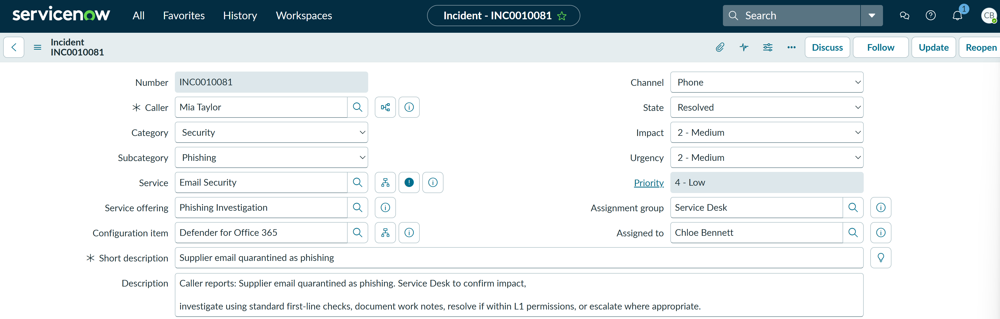
Controlled Test Setup
To reproduce the issue safely without using malicious content, a temporary Exchange Online mail flow rule matched a unique test subject and set the spam confidence level to 9. This forced only the controlled test message through the anti-spam quarantine workflow.
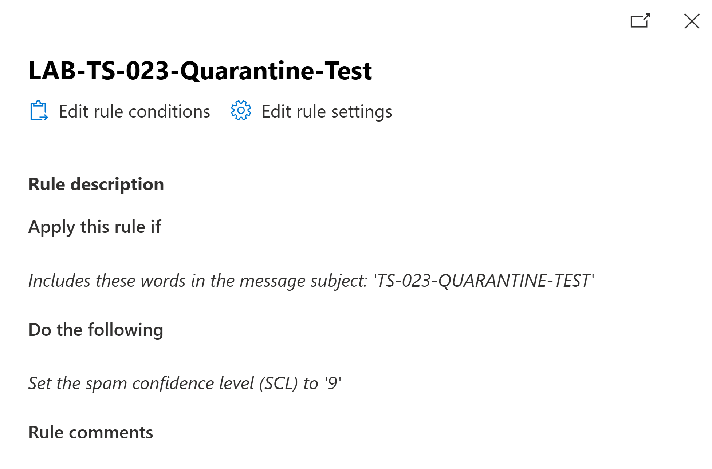
First-Line Investigation
Chloe accessed Microsoft Defender and opened the quarantine page. The portal itself was available, but the Service Desk account displayed zero items and no organisation-wide quarantine data. Sam Jackson's message therefore could not be located or reviewed using Chloe's permissions.
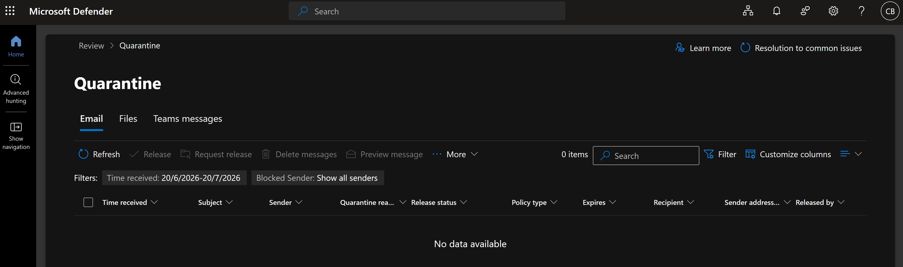
Escalation
Chloe documented the access limitation in ServiceNow and reassigned incident INC0010081 to Kristian Nietzold for privileged security review and any required release action. The incident remained in progress during the escalation.
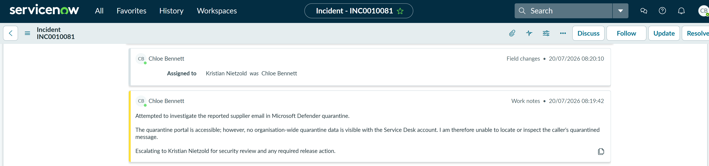
Privileged Security Investigation
Signed in with the administrator account, Kristian could see the quarantined message. The queue showed the expected supplier test email for Sam Jackson with the release status Needs review and the quarantine reason High Confidence Phish.
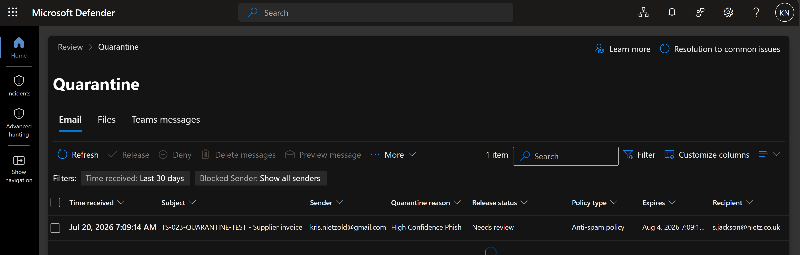
The message details confirmed that it had been classified as High Confidence Phish, handled by the default anti-spam policy and had not yet been released to the recipient.
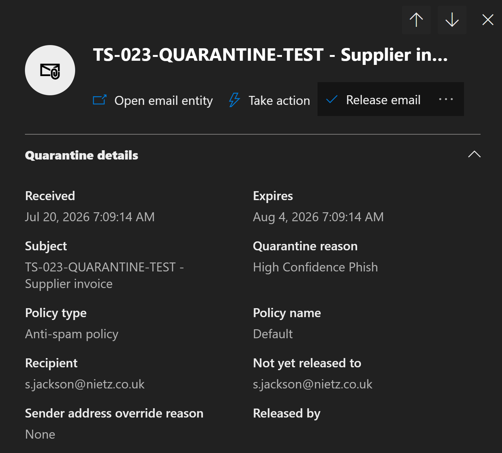
Kristian then reviewed the sender-authentication results. SPF, DKIM, DMARC and composite authentication all passed. These results supported the controlled-test context, although authentication alone was not treated as proof that an email was safe.
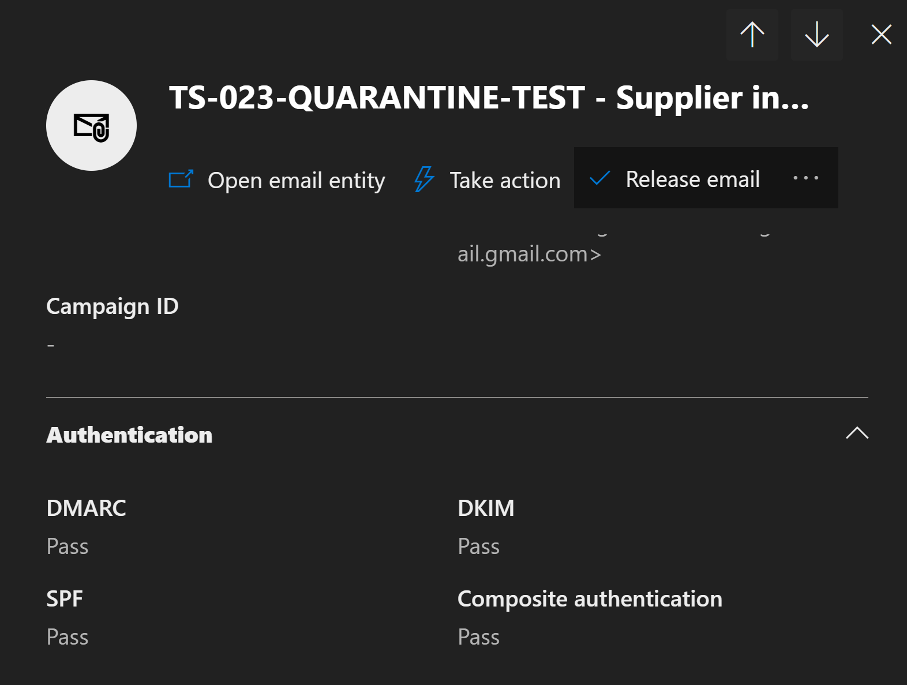
Fix Applied
After validating the recipient, message details, authentication results and controlled test conditions, Kristian released the message to its original recipient. Microsoft Defender then changed the release status to Released.
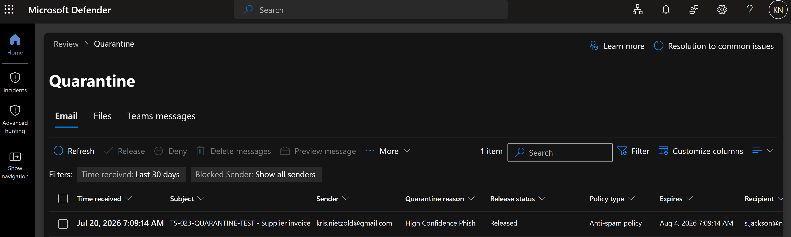
Handover and Customer Validation
Kristian documented the Defender investigation, successful authentication checks and release action in ServiceNow. The incident was then reassigned to Chloe for customer confirmation and closure.
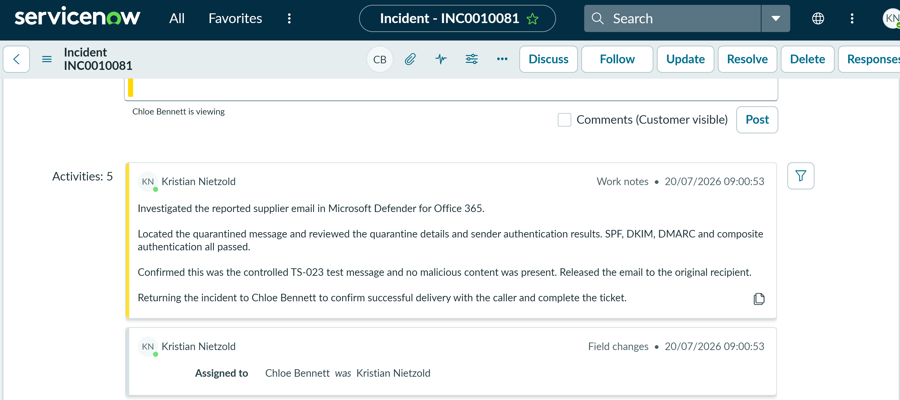
Chloe sent a customer-visible update advising Sam that the message had been reviewed and released, then asked him to confirm that it was visible in Outlook.
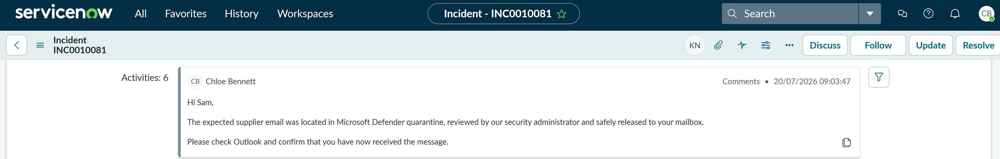
Cleanup
After testing was complete, the temporary Exchange Online rule was disabled successfully. This prevented future messages using the controlled subject from being forced into quarantine and returned mail flow to its normal state.
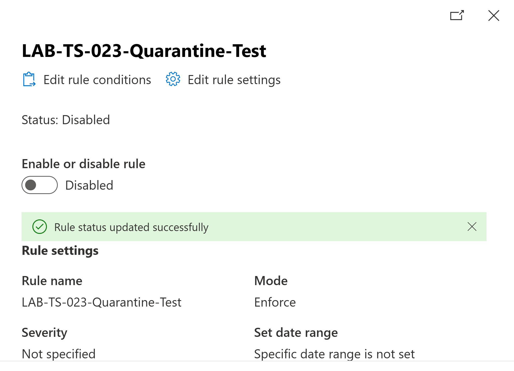
Resolution
Sam Jackson confirmed that the supplier email had been received successfully. Chloe verified that the release had completed, recorded that no further action was required and resolved incident INC0010081 using the resolution code Solution provided.
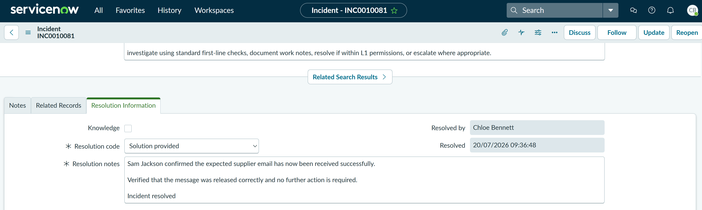
Summary
- Investigated a missing supplier email as an email-security incident.
- Used a tightly scoped Exchange Online rule to create a controlled quarantine event safely.
- Confirmed that the Service Desk account could access Defender but could not view organisation-wide quarantine data.
- Documented the permissions boundary and escalated the incident rather than granting unnecessary first-line privileges.
- Located the message with the administrator account and reviewed its classification, recipient and quarantine state.
- Reviewed SPF, DKIM, DMARC and composite authentication together with the controlled test context.
- Released the validated message to the original recipient and returned the incident to first line.
- Updated the customer, obtained confirmation of delivery and resolved the ServiceNow incident.
- Disabled the temporary mail flow rule after testing to prevent unintended future quarantine actions.